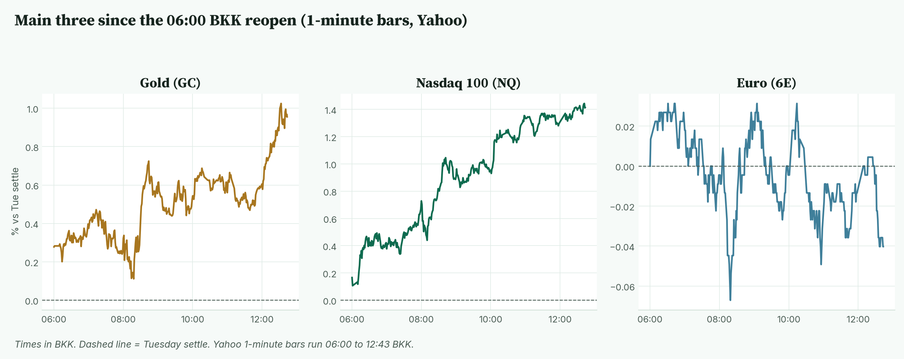
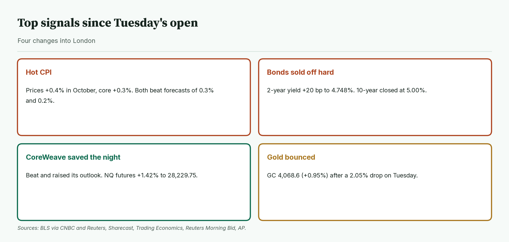
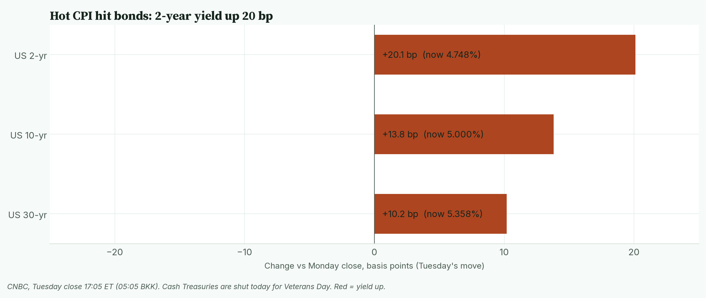
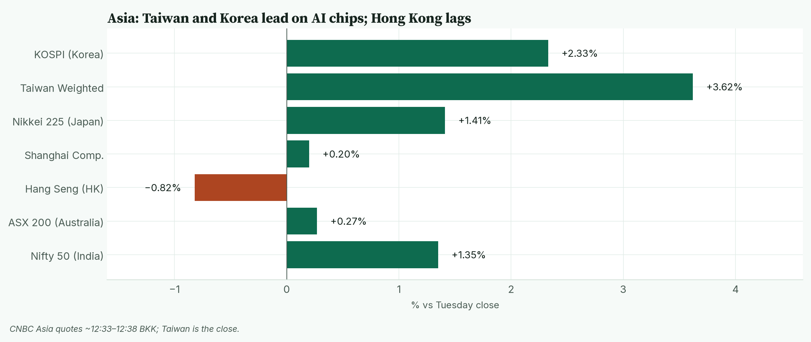
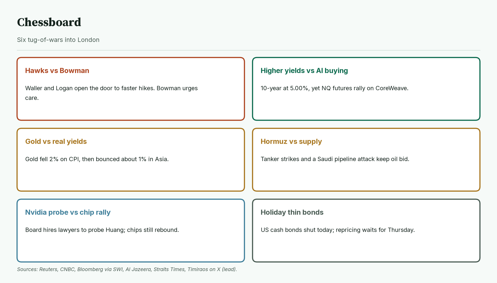
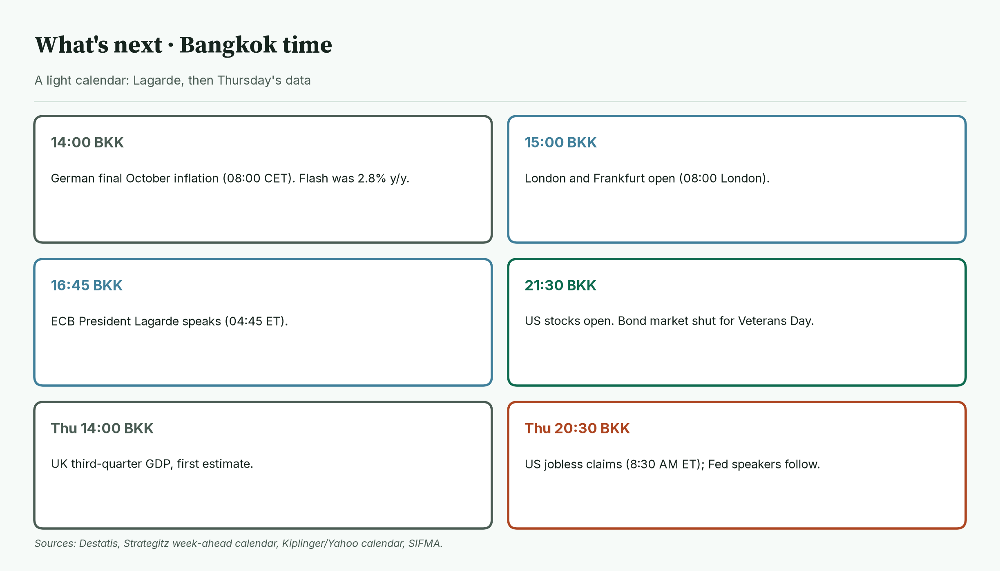
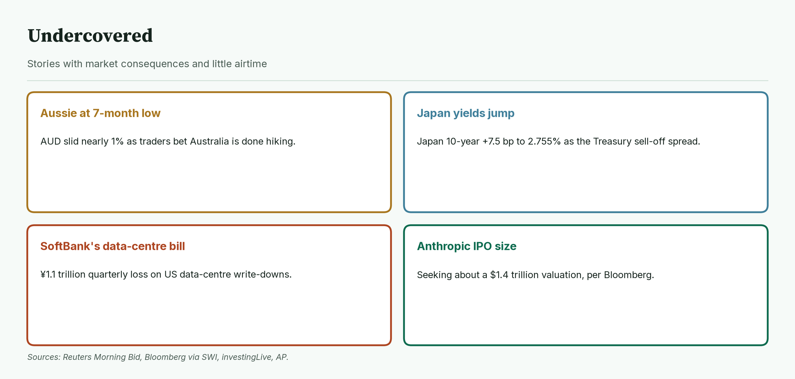
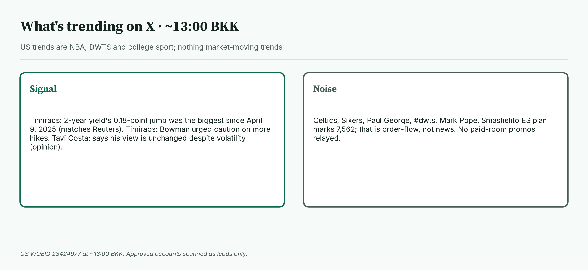

April · Market Intel, pre-London · Wed Nov 11, 2026 · ~13:10 BKK / ~06:10 London
Headline: A hot US CPI sent the 2-year yield up 20 bp and the 10-year to 5.00%, but CoreWeave's beat flipped the mood overnight. Gold futures sit at 4,068.6 (+0.95%), Nasdaq futures at 28,229.75 (+1.42%), and euro futures at 1.11770 (−0.04%). Lagarde at 16:45 BKK and the US stock open at 21:30 BKK, with the bond market shut, decide the session.
So what: markets now price a December Fed hike as done and are debating size. AI buying is fighting higher yields, and the bond market can't vote today.
 Caption: Futures at 12:43 BKK versus Tuesday's settle. Nasdaq and gold are bouncing after Tuesday's CPI drop. The 10-year and VIX are Tuesday's closes.
Caption: Futures at 12:43 BKK versus Tuesday's settle. Nasdaq and gold are bouncing after Tuesday's CPI drop. The 10-year and VIX are Tuesday's closes.
1) Main instruments The three main contracts since the 06:00 BKK reopen, as a % move from Tuesday's settle. Nasdaq climbed all morning. Gold firmed late. The euro is flat. |
 Caption: The three main contracts since the 06:00 BKK reopen, as a % move from Tuesday's settle. Nasdaq climbed all morning. Gold firmed late. The euro is flat.
(Futures are contracts that trade nearly around the clock, so they show the mood before stock markets open. Quotes are from the Yahoo Finance futures feed at 12:43 BKK (05:43 UTC), about 10 minutes delayed, and match CNBC within a tick. The CME reopen was 06:00 BKK (18:00 New York Tuesday). Session highs and lows use 1-minute bars from 06:00 BKK.)
Caption: The three main contracts since the 06:00 BKK reopen, as a % move from Tuesday's settle. Nasdaq climbed all morning. Gold firmed late. The euro is flat.
(Futures are contracts that trade nearly around the clock, so they show the mood before stock markets open. Quotes are from the Yahoo Finance futures feed at 12:43 BKK (05:43 UTC), about 10 minutes delayed, and match CNBC within a tick. The CME reopen was 06:00 BKK (18:00 New York Tuesday). Session highs and lows use 1-minute bars from 06:00 BKK.)
- Gold futures (GC, Dec): 4,068.6, +0.95%, at 12:43 BKK. Driver: a bounce after Tuesday's 2.05% CPI drop, as the dollar and yields jumped (Reuters). Tuesday's settle was 4,030.2. Today's range is 4,034.1 (08:14 BKK) to 4,073.7 (12:33 BKK). Spot gold is 4,058.52, +0.68% (CNBC, ~12:53 BKK).
- Nasdaq 100 futures (NQ, Dec): 28,229.75, +1.42%, at 12:43 BKK. Driver: CoreWeave beat forecasts and raised its outlook after the US close (Reuters, Trading Economics). Tuesday's settle was 27,835.25, down 0.64% on the day. Today's range is 27,856.00 (06:10 BKK) to 28,243.50 (12:41 BKK).
- Euro futures (6E, Dec): 1.11770, −0.04%, at 12:43 BKK. Driver: the dollar surged on the hot CPI (Reuters); 6E settled 1.11815 Tuesday, down 0.51%. Today's range is 1.11740 (08:19 BKK) to 1.11855 (10:14 BKK). Spot euro is 1.1160 (CNBC, ~12:53 BKK).
- Takeaway: Nasdaq is trading at the day's high. Gold is near its high. The euro is pinned near Tuesday's lows.
Context. The dollar index (DXY, the dollar against six major currencies) is 102.28, +0.05% (CNBC, ~12:53 BKK). The 10-year US yield (what the US government pays to borrow for 10 years) is 5.000%, up 13.8 basis points, as of Tuesday's close (CNBC, 05:05 BKK, 17:05 ET; US bonds are shut today; a basis point is 0.01 percentage point). The VIX (the "fear gauge" built from S&P 500 option prices) closed Tuesday at 19.46, −2.31% (Cboe via CNBC). US oil (CL, December) is 86.38, +0.40% (12:43 BKK). S&P 500 futures (ES) are 7,591.00, +0.62% (12:43 BKK). Bitcoin is $73,792, +0.24% versus CNBC's previous close (CNBC/Coin Metrics, ~12:53 BKK).
2) Top signals Four changes since Tuesday's open. CPI ran hot, bonds sold off, CoreWeave lifted tech, and gold bounced. |
 Caption: Four changes since Tuesday's open. CPI ran hot, bonds sold off, CoreWeave lifted tech, and gold bounced.
Caption: Four changes since Tuesday's open. CPI ran hot, bonds sold off, CoreWeave lifted tech, and gold bounced.
- Hot CPI. October prices rose 0.4%, core 0.3%. Forecasts were 0.3% and 0.2% (BLS via CNBC, Reuters).
- Stocks slipped. The S&P 500 fell 0.38% to 7,520.93. The Nasdaq Composite fell 0.74% to 25,065.87 (Sharecast).
- CoreWeave beat. Revenue rose 168% and it raised its outlook. Shares rose 8% to 13% after hours, depending on the source (Reuters, Trading Economics).
- Takeaway: the Fed story got more hawkish, but the AI trade got a reprieve.
3) Rates, FX and oil Tuesday's bond sell-off. The 2-year jumped 20 bp, its biggest one-day rise since April 2025. |
 Caption: Tuesday's bond sell-off. The 2-year jumped 20 bp, its biggest one-day rise since April 2025.
Caption: Tuesday's bond sell-off. The 2-year jumped 20 bp, its biggest one-day rise since April 2025.
- Tuesday close (CNBC, 17:05 ET): 2-year 4.748% (+20.1 bp), 10-year 5.000% (+13.8 bp), 30-year 5.358% (+10.2 bp).
- The 2-year's jump was the biggest since the April 2025 tariff shock (Reuters; Timiraos on X).
- Mentor: the 2-year tracks where traders think the Fed is heading. A jump that large means they moved hike bets forward fast.
- US cash bonds are shut today for Veterans Day (SIFMA). Stocks trade normally.
- Yen. USD/JPY is 158.77, +0.03% (CNBC, ~12:53 BKK).
- Oil. January Brent is 92.25, +0.83% (CNBC, ~12:43 BKK). Tanker strikes near Hormuz and a Monday attack on Saudi Arabia's East-West pipeline keep a risk premium in (Straits Times, Al Jazeera).
- Takeaway: yields at 5% are the headwind every rally has to beat.
4) Why it matters Asia at CNBC's midday prints. Taiwan and Korea lead on AI chips. Hong Kong lags. |
 Caption: Asia at CNBC's midday prints. Taiwan and Korea lead on AI chips. Hong Kong lags.
The Fed's December 8–9 meeting is now about how much, not whether.
Caption: Asia at CNBC's midday prints. Taiwan and Korea lead on AI chips. Hong Kong lags.
The Fed's December 8–9 meeting is now about how much, not whether.
- A December quarter-point hike is fully priced, with about a 10% chance of a half-point move (Reuters).
- Waller said a core reading near 0.3% would make him consider a half-point hike (CNBC). Core came in at 0.3%.
- Dallas Fed's Logan said the Fed needs at least two more quarter-point hikes (Reuters). Goldman now expects hikes in December and March (Reuters).
- Fed Vice Chair Bowman urged care, saying more tightening must be weighed against costs (Timiraos on X, lead).
- Asia: Taiwan closed +3.62%, KOSPI +2.33%, Nikkei +1.41%, Hang Seng −0.82% (CNBC quotes).
- Takeaway: the higher the Fed path, the harder it is for gold and Nasdaq to hold bounces.
5) Chessboard Six tug-of-wars into London. Fed speak and AI earnings can move Nasdaq and gold fastest. |
 Caption: Six tug-of-wars into London. Fed speak and AI earnings can move Nasdaq and gold fastest.
Caption: Six tug-of-wars into London. Fed speak and AI earnings can move Nasdaq and gold fastest.
- Hawks vs Bowman. Waller and Logan lean faster; Bowman leans careful (CNBC, Reuters, Timiraos lead).
- Higher yields vs AI buying. The 10-year is at 5.00%, yet NQ futures are up 1.42%.
- Gold vs real yields. Gold fell 2.05% on CPI and is bouncing about 1% now.
- Hormuz vs supply. Tanker strikes and the Saudi pipeline attack keep oil supported (Straits Times, Al Jazeera).
- Nvidia probe vs chip rally. Nvidia's board hired Wachtell to probe CEO Jensen Huang's ties to a suspected Chinese spy (Bloomberg via SWI). Two days of losses cut about $430 billion from its value (Reuters).
- Holiday-thin bonds. Treasuries can't reprice until Thursday.
- Takeaway: the scheduled risk is light today. The unscheduled risks are Fed headlines, Nvidia news and Hormuz.
6) Leading indicators (BKK times) A light calendar. German inflation and Lagarde this afternoon, then the US stock open with bonds shut. |
 Caption: A light calendar. German inflation and Lagarde this afternoon, then the US stock open with bonds shut.
Caption: A light calendar. German inflation and Lagarde this afternoon, then the US stock open with bonds shut.
- 14:00: German final October inflation (08:00 CET). The flash reading was 2.8% (Destatis).
- 15:00: London and Frankfurt open (08:00 London).
- 16:45: ECB President Christine Lagarde speaks (04:45 ET).
- 21:30: US stocks open (9:30 AM ET). The bond market is closed for Veterans Day. No US data today.
- Thu 14:00: UK third-quarter GDP, first estimate. Thu 20:30: US jobless claims (8:30 AM ET), then several Fed speakers.
- Levels to watch: GC 4,034.1 and 4,073.7. NQ 27,856.00 and 28,243.50. 6E 1.11740 and 1.11855. 10-year 5.021% (Tuesday's CNBC high). WTI 86.12.
- Takeaway: Lagarde at 16:45 BKK can move the euro. The 21:30 BKK US open decides whether Nasdaq's rally holds.
7) Undercovered Four stories with little airtime. They touch currencies, Japanese bonds, AI costs and AI funding. |
 Caption: Four stories with little airtime. They touch currencies, Japanese bonds, AI costs and AI funding.
Caption: Four stories with little airtime. They touch currencies, Japanese bonds, AI costs and AI funding.
- Aussie at a seven-month low. The Australian dollar slid nearly 1% as traders bet Australia is done hiking (Reuters).
- Japan's yields jumped. The 10-year JGB rose 7.5 bp to 2.755% as the Treasury sell-off spread (Bloomberg via SWI).
- SoftBank's data-centre bill. A quarterly loss of about ¥1.1 trillion ($7.1 billion) on US data-centre write-downs (CNBC TV18, Reuters).
- Anthropic's IPO size. It is seeking about a $1.4 trillion valuation (Bloomberg via SWI).
8) What's trending on X (~13:00 BKK) US trends are NBA, DWTS and college sport. Nothing market-moving is trending. |
 Caption: US trends are NBA, DWTS and college sport. Nothing market-moving is trending.
Caption: US trends are NBA, DWTS and college sport. Nothing market-moving is trending.
- US: Celtics, Sixers, Paul George, #dwts, Mark Pope.
- Signal: Nick Timiraos says the 2-year's 0.18-point jump was the biggest since April 9, 2025 (matches Reuters).
- Signal / lead: Timiraos on Bowman says she urged caution on more hikes. I have not read her text directly.
- Opinion: Tavi Costa says his long-term view is unchanged despite the volatility. No figures to verify.
- Noise: NBA, DWTS. Smashelito's ES plan marks 7,562 as a reference; that is order-flow analysis, not news. No JJ / vwaptrader1 paid-room promos relayed.
Bottom line: the Fed path got steeper, and AI earnings bought the dip anyway. For Jim: gold at 4,068.6 sits at the top of its 4,034.1 to 4,073.7 range. Nasdaq at 28,229.75 is just under its 28,243.50 high; 27,856.00 is the floor. The euro at 1.11770 sits inside 1.11740 to 1.11855. Interpretive note: with bonds shut, a hawkish Fed headline could hit gold and Nasdaq without a yield cushion. That is a possible path, not a forecast. 🔮 Interpretive, not data: Wednesday is the 11/11 date numerologists love for "new beginnings." The market's version is a fresh start for the AI trade after a hot print. Symbol, not signal.
Confidence: Futures levels and session ranges: high (Yahoo 1-minute bars, matching CNBC within a tick). Yields and VIX: Tuesday closes via CNBC, since US bonds are shut today. DXY, spot euro, spot gold, Brent, yen, Bitcoin: CNBC, time-stamped. CPI: BLS via CNBC and Reuters. Fed odds: Reuters, not read directly from CME. CoreWeave: Reuters, Trading Economics, Minkabu. Asia: CNBC quotes, AP, Bloomberg. Calendar: Destatis, Strategitz, Kiplinger via Yahoo, SIFMA. Timiraos and Tavi Costa: X leads only.
Charts: /workspace/april-charts/2026-11-11/pre-london-{scoreboard,main3,signals,rates,asia,chess,leading,under,xsplit}.png |